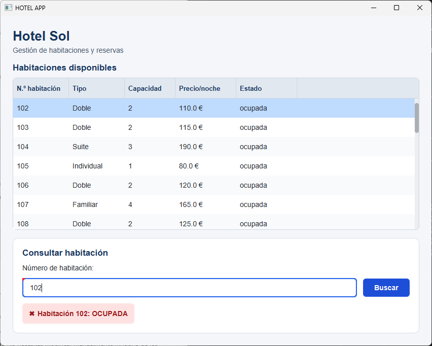

en desarrollo · rediseño de accesibilidad
hotelApp
Interfaz de reservas de hotel con JavaFX y FXML. Lee las habitaciones de un XML, las muestra en una tabla y busca por número: disponible, ocupada o no existe, con validación de lo que se escribe.
Siguiente paso: rediseñar la pantalla para que sea accesible.
- Más contraste en la pantalla, el botón y el resultado
- Estado de la habitación con color y símbolo, no solo texto
- Etiquetas claras y mensajes de validación con marcas visuales
- Navegación por teclado con atajos en JavaFX
- Wireframe y mockup del antes y el después, aquí mismo